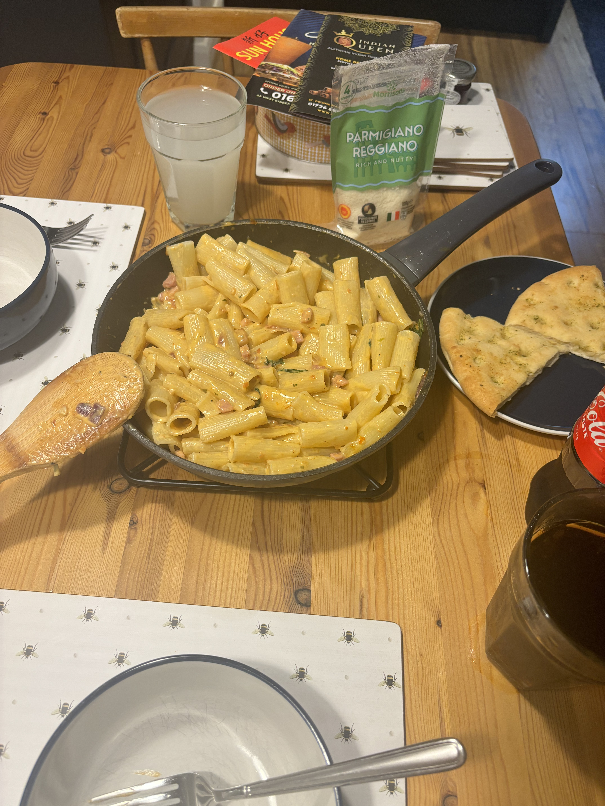

Creamy Bacon Pasta Recipe

Home
Description
Enjoy this creamy and rich bacon pasta dish. Perfect for when you're feeling lazy and want to have a low maintenance, delicious meal.
Ingredients
- smoked bacon
- red onion
- double cream
- sun-dried tomatoes
- white wine
- pasta of choice
- chicken stock
- paramesan
- garlic bread [optional]
Steps
- Prepare the ingredients by dicing the bacon, sun-dried tomatoes and red onion. Place pasta in boiling water and leave for 15 minutes.
- Pan fry bacon until golden and red onion until soft
- Add sun-dried tomatoes.
- Add double cream and stock to the pan. Allow to simmer and thicken.
- Once the sauce is to your likening, add the cooked pasta.
- Plate and garnish with grated parmesan. Serve with garlic bread [if you decided to include it].